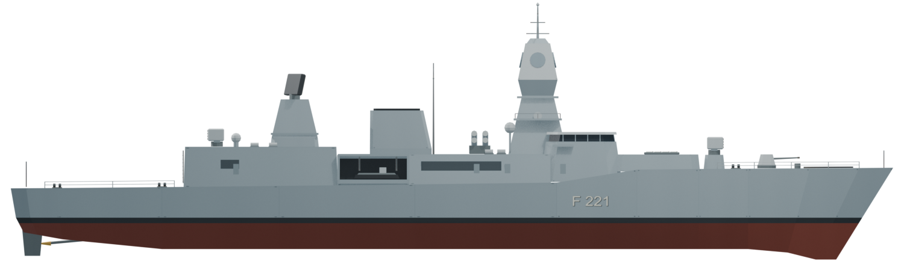
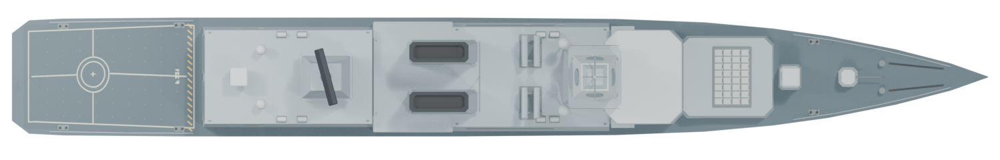
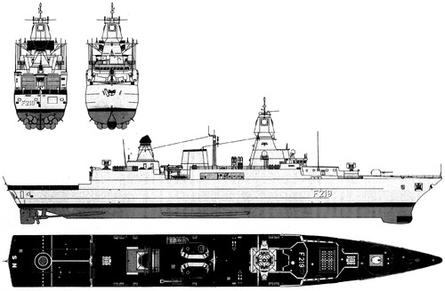

<!doctype html>
<html lang="de"><meta charset="utf-8"><title>F124 Referenzabgleich</title>
<style>
body{font:16px system-ui;margin:20px;background:#eee;color:#222}main{max-width:1500px;margin:auto}h2{font-size:18px;margin:14px 0 4px}svg,img{display:block;width:100%;background:white}svg{height:auto}label{display:block;margin:12px 0}.overlay{position:relative;background:white}.overlay>svg{display:block}.overlay>img{position:absolute;inset:0;opacity:.5}input{width:240px;vertical-align:middle}small{display:block;margin:4px 0}
</style><main>
<h1>F124 – gleiche Länge, gleiche Blickrichtung</h1>
<label>Modell über Referenz <input id="mix" type="range" min="0" max="100" value="50"> <output id="percent">50 %</output></label>
<h2>Seitenansicht – Überlagerung</h2>
<div class="overlay"><svg viewBox="0 108 500 148" xmlns="http://www.w3.org/2000/svg"><image href="reference-user.png" x="0" y="0" width="500" height="328"/></svg></div>
<h2>Draufsicht – Überlagerung</h2>
<div class="overlay"><svg viewBox="0 257 500 80" xmlns="http://www.w3.org/2000/svg"><image href="reference-user.png" x="0" y="0" width="500" height="328"/></svg></div>
<h2>Referenz – unveränderte Quelldatei</h2>
<h2>Modell – Seitenansicht</h2>
<h2>Modell – Draufsicht</h2>
<small>Die geringe Auflösung begrenzt die Ablesegenauigkeit. Die Überlagerung ist eine Formkontrolle, kein Nachweis einer maßgenauen technischen Rekonstruktion.</small>
</main><script>
const mix=document.getElementById('mix');mix.addEventListener('input',()=>{document.querySelectorAll('.overlay>img').forEach(el=>el.style.opacity=mix.value/100);document.getElementById('percent').value=mix.value+' %';});
</script></html>
